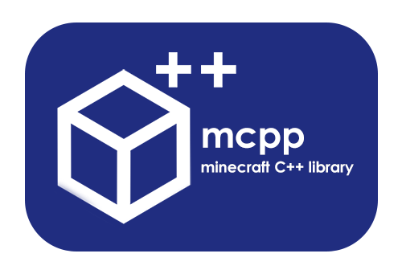

mcpp (Minecraft++)


 \ mcpp (Minecraft++) is a library built to interface with Minecraft through Spigot server running the ELCI plugin and using C++. It is currently limited to MacOS/Linux or Windows with WSL.
\ mcpp (Minecraft++) is a library built to interface with Minecraft through Spigot server running the ELCI plugin and using C++. It is currently limited to MacOS/Linux or Windows with WSL.
➡ For more details on the broad strokes of mcpp, refer to the wiki!
History
This library is based on mcpi, which is a Python library with similar functionality.
In addition to C++ support, this library implements several new commands supported by ELCI:
getBlocksto get a cuboid of blocks with modifiers in a performant manner,getHeightsto get a 2D area of heights in a performant manner,doCommandto perform an in-game minecraft command which allows for additional functionality.
This C++ version was created for the Royal Melbourne Institute of Technology (RMIT) to supplement the COSC2084 (Programming Studio 2) course.
Installation
Windows
Since the release is intended for UNIX systems and not tested on Windows, the options to run locally are as follows:
- Build manually (there are included CMake build files)
- Run with WSL, in which case follow the Linux instructions below. You may need to specify a connection address manually in
MinecraftConnection()if you are running Spigot with ELCI on Windows, which you can find usingnslookup "$(hostname).local"on your WSL terminal. The default port for ELCI is4711.
Mac and Linux
- Install
g++,make,cmakeand any other build prerequisites - Clone this repository via
git clone https://github.com/rozukke/mcpp.git - Install by running
cmake .andsudo make installinside the cloned directory. - After doing this, the library should be accessible via a
#include <mcpp/mcpp.h>directive. - When compiling code using the library, use the flag
-lmcppfor Makefiles ortarget_link_libraries(your_executable mcpp)for CMake.
License
The following applies to all code:
Copyright 2024 Artemis Rosman
Licensed under the Apache License, Version 2.0 (the "License"); you may not use this file except in compliance with the License. You may obtain a copy of the License at
http://www.apache.org/licenses/LICENSE-2.0
Unless required by applicable law or agreed to in writing, software distributed under the License is distributed on an "AS IS" BASIS, WITHOUT WARRANTIES OR CONDITIONS OF ANY KIND, either express or implied. See the License for the specific language governing permissions and limitations under the License.